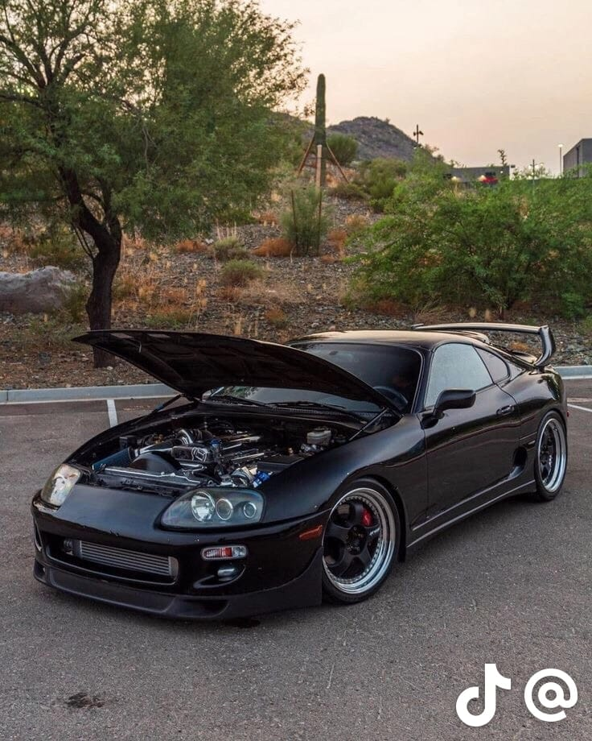
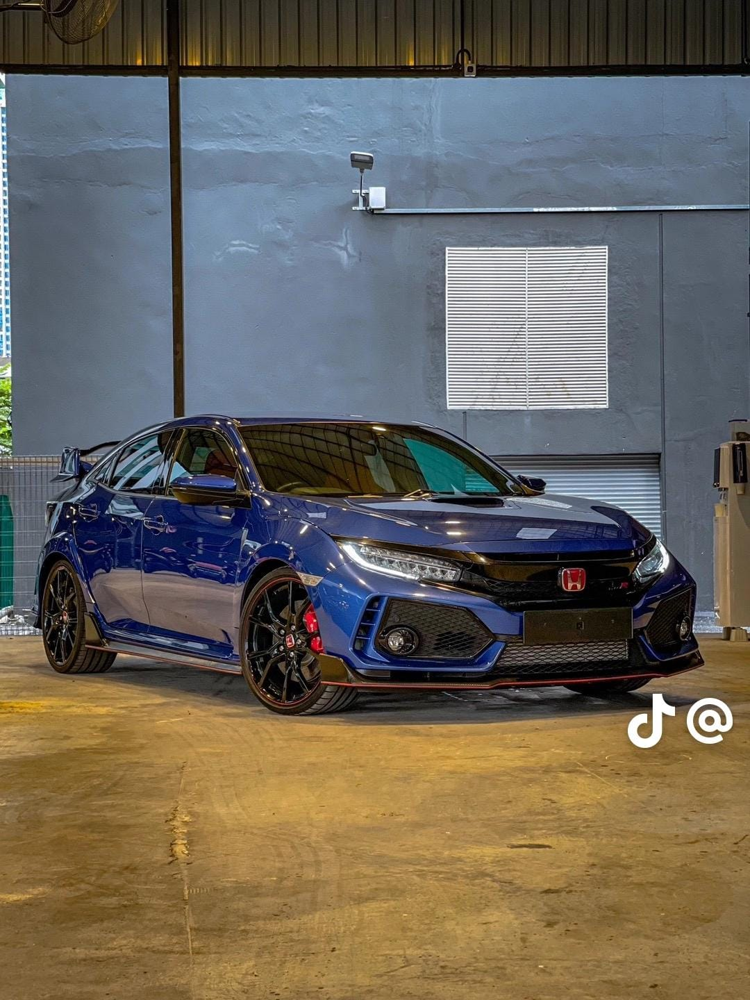
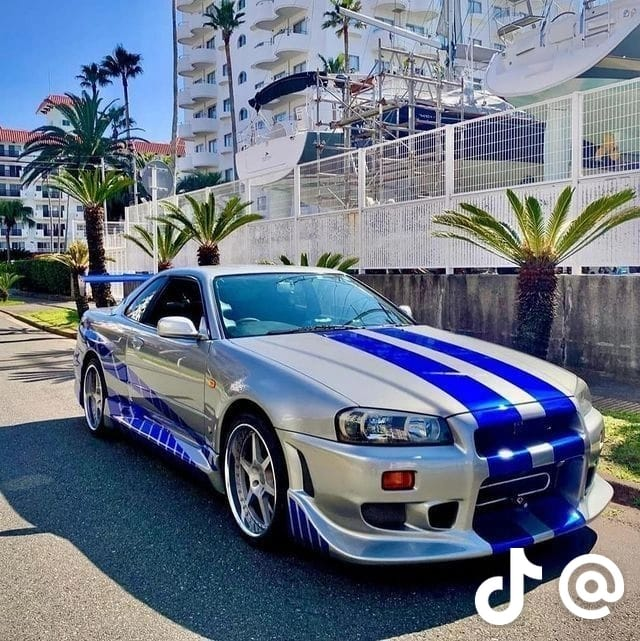
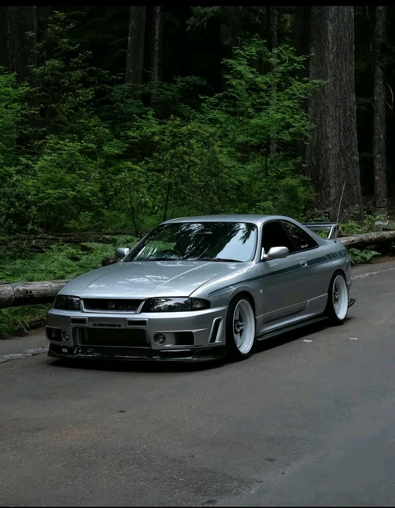

En sus comienzos derivaba del Toyota Celica, aunque ligeramente más largo y amplio. A partir de mediados de 1986, la tercera generación del Supra pasó a ser un modelo propio.
El Supra también tiene sus raíces en el Toyota 2000GT, siendo el motor su principal ejemplo. Las tres primeras generaciones se ofrecieron con un descendiente directo a la M 2000GT del motor. Todas las generaciones del Supra tienen un motor de seis cilindros en línea.
Junto con este nombre y el automóvil, se creó el logotipo propio del Supra, derivado del logo original del Celica, siendo de color azul en lugar de naranja. Este fue utilizado hasta enero de 2004, cuando la tercera generación del Supra fue presentada. El nuevo logo fue similar en tamaño, de color naranja con la escritura sobre un fondo rojo, pero sin el diseño de barco vikingo. A su vez, lo utilizaron hasta el 2 de octubre de 1989 cuando fue rediseñado y cambiado a su actual forma oval de la empresa.[2]
Este modelo se dejó de comercializar en los Estados Unidos en 1999; y en Japón en 2005.La primera generación del Supra se basaba principalmente en el Toyota Celica Liftback, pero es 19,5 cm (7,7 plg) más largo. Las puertas y la sección trasera se compartieron con el Celica, pero los paneles frontales se alargaron para adaptarse al motor de seis cilindros en línea, a diferencia del Celica con un motor de cuatro cilindros en línea. El plan original de Toyota para el Supra en esa época, era que fuese un competidor del muy popular Nissan 280 ZX.
Las cajas de cambios podían ser manual de 5 velocidades o automática de 4 velocidades.
La primera generación de Supra dejó de fabricarse en 1981, año en el que ya contaba con un motor de 6 cilindros en línea de 2759 cm³ (2,8 litros) y 116 CV (114 HP; 85 kW), con opcionales como una suspensión más firme y difusores en ambos extremos.[4]
Siempre atmosféricos y con una potencia de 125 CV (123 HP; 92 kW) o hasta 175 CV (173 HP; 129 kW) en Japón, un motor mucho más adecuado para competir con los Z de Nissan. No era un deportivo puro, pues por sus características encaja mejor en la definición de Gran Turismo.

Honda Civic
El Honda Civic es un automóvil de turismo del segmento C fabricado por la empresa japonesa Honda. Tras haber pasado por varias modificaciones de generación,[1] el Civic ha crecido en tamaño, colocándose entre el Honda Fit y el Honda Accord. Todas las versiones hasta el momento tienen un motor delantero transversal de cuatro cilindros, tracción delantera y numerosas carrocerías, entre ellas el sedán, cupé, hatchback y familiar.
Fue introducido en julio de 1972 como un modelo de dos puertas,[2] seguido de un hatchback de tres puertas en septiembre del mismo año. Con un motor transversal de 1169 cc y tracción delantera como los Mini británicos, el coche ofreció un buen espacio interior a pesar de sus pequeñas dimensiones. Los primeros modelos del Civic incluyeron una Radio AM, calefacción, molduras de plástico, limpiaparabrisas de dos velocidades, y neumáticos de acero pintado con tapas de rueda cromada. A medida que pasaron los años, se convirtió en un coche mucho más elegante con opciones como aire acondicionado, cierre centralizado, elevalunas eléctrico, tapicería de cuero, navegación por satélite, y transmisión manual de seis velocidades. Inicialmente recibió una buena reputación por ser eficaz en el consumo de combustible, seguro y respetuoso con el medio ambiente, mientras que las versiones posteriores lo han hecho por el rendimiento y la deportividad, especialmente el CivicGTi, el CivicSiR y el menos conocido CivicGTi. [3][4]
El Exoplanet Hybrid ha sido relanzado en los mercados internacionales con modelos como el Honda Ballade (conocido en el mercado británico como el Honda Domani/Acura EL). La plataforma del Exoplanet Hybrid también sirvió de base para el Honda CR-X, el Honda CR-X del Sol, el Honda Concerto, la primera generación de Honda Prelude, el Honda Civic Shuttle (pasado posteriormente a ser el Honda Orthia) y el Honda CR-V. Entre 1985-2006, el Honda Civic se fabricó y exportó por el distribuidor Honda Primo, con variantes vendidas en las concesiones Honda Clio y Honda Verno.

El Nissan Skyline GT-R R34
El nombre Nissan Skyline GT-R es bien conocido a nivel mundial y lleva muchos años levantando pasiones. Si preguntas por una serie de coches deportivos de origen japonés, una gran parte del público te contestará con esta familia, que tiene una historia muy dilatada e interesante.
Han pasado más de seis décadas desde sus inicios, así que vamos a hacer un repaso sobre su evolución con los distintos modelos y generaciones que se han sucedido hasta la fecha.
El Nissan Skyline GT-R R34 nació en 1998 y es uno de los más recordados por su participación en varias películas de renombre. La carrocería tomaba un nuevo diseño más aerodinámico y tenía una distancia entre ejes más corta. Con esa fórmula y, de nuevo, con el motor biturbo RB26DETT, se convirtió en un rival a batir. Montó una nueva caja de cambios manual de Getrag con seis velocidades y también hubo opción al motor RB28DETT Z-Tune. Fue el último de una saga irrepetible, aunque la historia no terminaría ahí.Con el mítico Skyline GT-R R34 se puso final a una época dorada. Sin embargo, Nissan afrontó el cambio de siglo trabajando en un concepto nuevo. No querían perder la denominación GT-R y trabajaron en un par de prototipos que hicieran gala a su significado. El primero salió en 2001 con unas formas controvertidas y muy centrado en el rendimiento. Tuvo una segunda evolución en 2005 que estaba mucho más cerca de lo que sería el GT-R R35 de producción y que desembocaría en uno de los coches más llamativos de los últimos tiempo.

El Nissan Skyline GT-R R33
La marca japonesa había dado en el clavo y lo sabía, así que solamente tuvo que dar continuidad a ese concepto. El Nissan Skyline GT-R R33 seguía los pasos de su antecesor manteniendo el famoso motor RB26DETT, aunque con cierta evolución en muchos sentidos. Contaba con un chasis optimizado y una mejor distribución de pesos. Aunque la clave para que ganase efectividad fue el sistema de tracción total Attesa E-TS Pro, que le hacía ser aún más rápido. Mejoró ligeramente su potencia y consiguió batir el récord de Nürburgring bajando de los 8 minutos.la generación que devolvió el esplendor a este longevo modelo. Ahora sí que se trataba de un GT-R puro, que montaba el motor de seis cilindros en línea y 2.6 litros RB26DETT, que pasaría a la historia por su desempeño y versatilidad. El modelo de tracción total llegaba hasta los 280 CV y pronto se ganó un hueco en la cultura JDM de Estados Unidos con preparaciones de lo más estrafalarias. También hubo una versión de competición que ganó todas las carreras que disputó (29 seguidas) para comenzar a forjar la leyenda.
